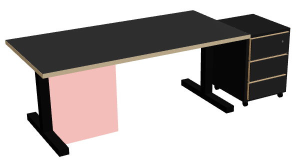
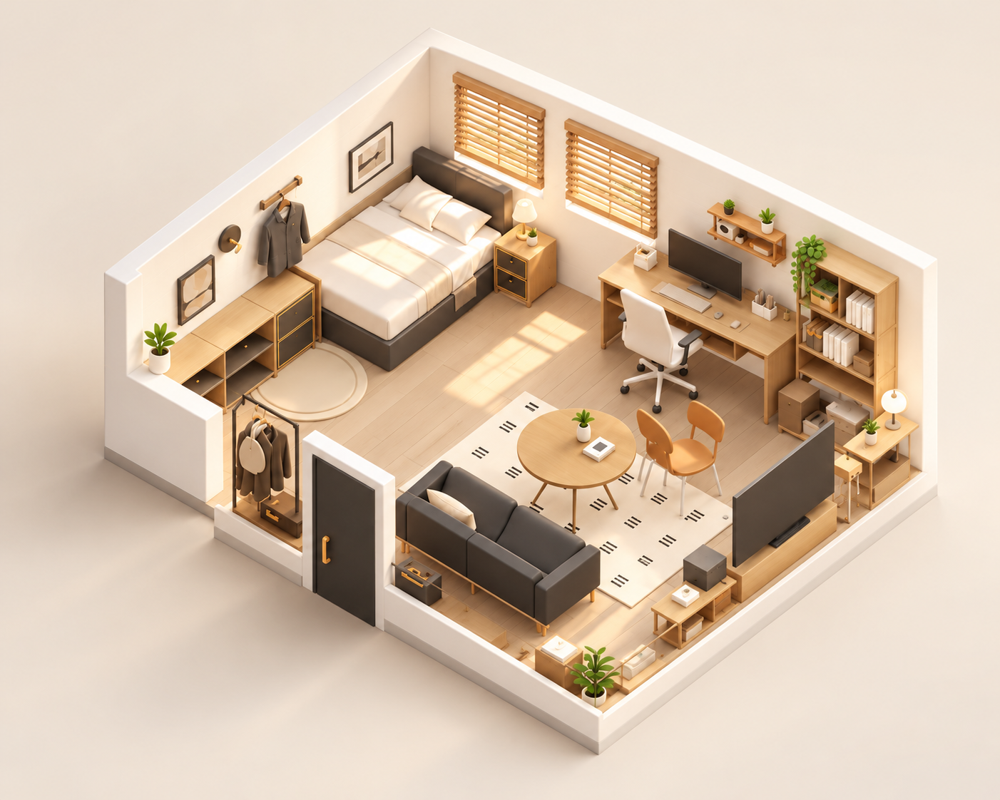
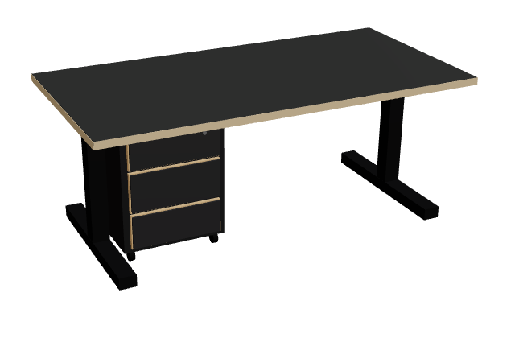
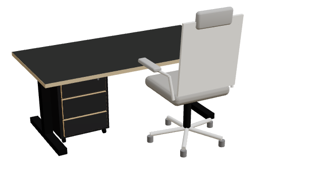

책상 아래에 두려던 서랍장을 원하는 위치에 설치하지 못해 다른 곳으로 옮긴 사례

원래 자리(붉은 칸) 대신 옆으로 이동방을 만지작, 내 취향을 완성
온라인에서 가구를 구매하기 전, 내 공간에 맞는지 3D로 배치하고 설치 조건을 확인하는 서비스입니다.

02 문제 정의 — 왜 만들었을까?
온라인으로 가구를 살 때 크기와 규격을 확인해도, 실제 설치할 공간과 사용 조건에 맞는지는 판단하기 어렵습니다. 특히 책상 아래 서랍장처럼 주변 구조까지 고려해야 하는 가구는 치수만으로 알기 어려워요.
크기는 확인했지만
실제로 들어갈지 모르고
배치 후 사용도 걱정

03 문제의 근거 — 실제 사용자도 같은 고민을 했을까?
온라인 가구 구매 경험 설문(2026.10.09~10.12) 전체 응답 35건 중, 관련 경험이 있는 26명의 응답을 분석했습니다.
크기·규격 정보 확인
구매 판단 어려움
공간 적합성 고민
각 수치는 해당 문항의 응답 결과이며, 공간 적합성은 구매 판단에 어려움을 겪은 16명을 기준으로 집계했습니다.
“식탁 높이에 맞는 의자를 찾기 위해 구매 후기를 추가로 확인했어요.”
책상 아래에 두려던 서랍장을 원하는 위치에 설치하지 못해 다른 곳으로 옮긴 사례

원래 자리(붉은 칸) 대신 옆으로 이동책상 높이를 고려해 바퀴 사용을 조정한 사례
출처와 한계: 소규모 편의표본 설문과 선별된 구매 후기를 바탕으로 한 문제 탐색 결과이며, 공간 적합성 응답에는 물리적 설치뿐 아니라 시각적 조화에 대한 고민도 포함될 수 있습니다.
04 핵심 인사이트
룸지락은 제품 규격만으로 판단하기 어려운 실제 설치 조건을 직접 배치하고 비교할 수 있는 경험에 집중했습니다.
05 해결 방안 — 룸지락은 무엇을 제공할까?
오늘의집에 등록된 지원 상품을 선택하면 기본 규격이 자동으로 반영됩니다.
가구를 3D 공간에 놓고 위치와 주변 환경을 여러 각도에서 살펴봅니다.
책상 치수, 서랍장 위치, 바퀴 옵션 등 설치에 영향을 주는 조건을 직접 바꿉니다.
입력한 조건 기준으로 배치 가능 여부와 사용에 필요한 여유 공간을 비교합니다.
알아두세요 · 공간 적합성 결과는 확인된 치수의 범위에서만 판단합니다. 정확한 수치가 없는 조건은 “추가 확인 필요”로 구분해 알려드려요.
06 사용 방법 — 이렇게 사용해요
서랍장의 위치와 바퀴 옵션을 바꾸면서, 가구가 들어가는 것과 실제로 사용할 공간이 확보되는 것이 어떻게 다른지 확인해 보세요.
이 체험은 설치 조건의 차이를 이해하기 위한 가상 수치 예시입니다.
아래 체험 화면에서 서랍장 위치와 바퀴 옵션을 바꿔 보세요. 같은 미션을 실제 서비스에서도 해 볼 수 있어요.
책상 상세페이지가 바로 열려요. 서랍장 위치·바퀴 탭에서 직접 바꿔 보세요.

※ 개념 이해를 돕는 예시 그림이며 실제 설치 가능 여부는 제품 규격과 주변 구조에 따라 달라집니다.
07 제작 결정 및 회고 — 무엇을 배우고 개선했을까?
주요 제작 결정
가구를 자유롭게 배치하는 경험보다, 구매 전 실제 공간에 설치하고 사용할 수 있는지 판단하는 문제를 우선했습니다.
가구의 치수를 일일이 입력하는 부담을 줄이고, 구매를 고민하던 상품으로 바로 설치 조건을 확인할 수 있도록 설계했습니다.
KPT — 제작 회고
처음부터 만들고 싶은 기능을 정하기보다 설문과 구매 후기를 살펴보며 어떤 문제가 있는지 확인하려고 했다.
가구를 3D로 보여주는 데서 끝내지 않고, 실제 설치와 사용 조건까지 비교할 수 있도록 구현한 점이 의미 있었다.
처음에는 기능을 최대한 보여주고 싶어 안내 문구와 조작 항목을 많이 넣었다. 그런데 실제 피드백에서는 어디부터 봐야 할지 복잡하다는 의견이 있었다. 기능을 구현하는 것뿐 아니라, 사용자가 쉽게 이해하고 사용할 수 있도록 만드는 것도 중요하다는 걸 느꼈다.
다음에는 사용자가 설명 없이 상품을 선택하고 설치 조건을 확인할 수 있는지 직접 관찰해 보고 싶다. 특히 3D 화면이 단순한 치수 비교보다 구매 판단에 얼마나 도움이 되는지 검증하고 싶다.
08 직접 체험하기 — Try ROOMJIRAK
가구를 배치하고, 위치와 설치 조건을 바꿔보세요.
방을 만지작, 내 취향을 완성.